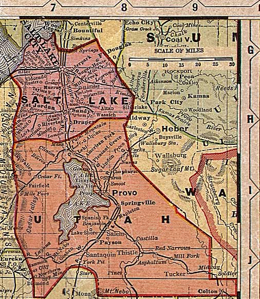

Salt Lake and Utah Counties, Utah, ca. 1908
From "Deseret Evening News New Home Library Wall Chart" (reprinted with permission)
Davis and Morgan Counties
All of Utah
Tooele
County

Summit
County
Wasatch
County
Juab County
Sanpete County
Carbon County